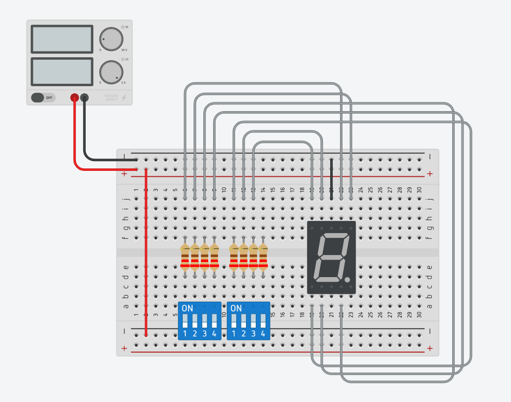

For this exercise we are tasked to create the schematic into TinkerCAD circuits and simulate it. The schematic is shown below.
The 555 timer is configured as an astable using R and C values. The result is an alternating HIGH/LOW signal which causes the red LED to flash.
We were told to experiment with the 7-segment circuit, and convert it to using an UNO to control the display. The program created should count from 0-9 continously.
I create the circuit by simply rewiring the wires to the digital inputs on the UNO board. I wrote a code that can be found in the embed below.